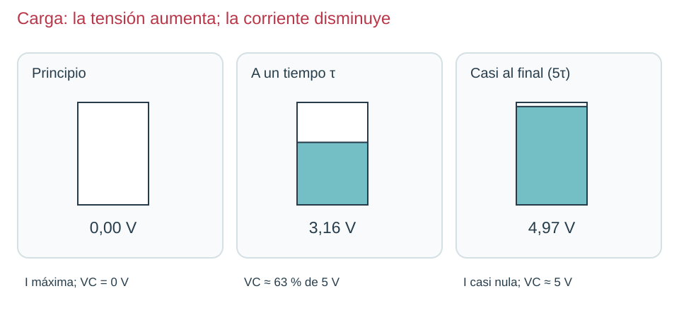

Contenido
Reconocerlo antes de cargarlo
Un condensador almacena energía separando cargas en dos conductores aislados entre sí. Su capacidad C indica cuánta carga puede almacenar por cada voltio. Un condensador electrolítico suele ser cilíndrico y llevar el valor, la tensión máxima y una banda que marca el terminal negativo. Comprueba las marcas: una patilla recortada ya no se reconoce por su longitud.

En los esquemas verás dos placas separadas; el signo + identifica el terminal positivo en el modelo polarizado. Para trabajar a 5 V usa, por ejemplo, 100 µF y tensión nominal de 10 V o superior. La tensión nominal es un límite, no la tensión que el condensador produce. La unidad es el faradio (F): 1 µF = 0,000001 F; 1 nF = 0,000000001 F.
Dos circuitos completos, dos procesos

Carga: al principio, el condensador descargado tiene 0 V y la resistencia recibe casi toda la tensión. Circula corriente y aumenta la tensión del condensador. Cuanto más se aproxima esta a 5 V, menor tensión queda en la resistencia y menor es la corriente. Al final ideal no circula corriente continua por el condensador.

Descarga: retira la fuente y cierra el camino a través de R. El condensador entrega su energía a la resistencia. Su tensión y la intensidad van disminuyendo. No se vacía de golpe ni se descarga cortocircuitándolo con un cable.
τ = R · C
En el circuito RC: sigue la resistencia del camino de carga o descarga; mide VC entre + y − del condensador.
| Magnitud | Símbolo | Unidad | Dónde y cómo se obtiene |
|---|---|---|---|
| Constante de tiempo | τ | segundo (s) | Se calcula; en la curva, tiempo para alcanzar el 63 % de la carga o conservar el 37 % en descarga. |
| Resistencia del camino | R | ohmio (Ω) | Medir la pieza aislada, en Ω y sin fuente. |
| Capacidad | C | faradio (F) | Leer el valor del condensador; convertir µF a F. No se mide en modo Ω. |
| Tensión del condensador | VC | voltio (V) | V ⎓; roja al + de C, negra al −; en paralelo. |
τ (tau): constante de tiempo, en segundos (s). R en Ω; C en faradios (F). Más R limita más la corriente; más C necesita más carga para aumentar la misma tensión.
Ejemplo: 10 kΩ y 100 µF
- Datos: R = 10 kΩ; C = 100 µF. Buscamos τ.
- R = 10 × 1000 = 10 000 Ω; C = 100/1 000 000 = 0,0001 F.
- τ = 10 000 × 0,0001 = 1 s.
- En carga desde 0 V, a 1 s se alcanza aproximadamente el 63 % de 5 V: 3,16 V.
- En descarga desde 5 V, a 1 s queda el 37 %: 1,84 V. A unos 5τ el proceso está casi completo.
Práctica guiada
- Predice τ y la tensión al cabo de un segundo.
- Con fuente desconectada, monta la carga: +5 V → 10 kΩ → positivo de C; negativo de C → 0 V. Voltímetro en paralelo con C.
- Revisa polaridad, enciende y observa la evolución. No esperes leer exactamente 3,16 V en un instrumento lento.
- Desconecta la fuente. Conecta la resistencia entre los terminales de C y observa la descarga. Comprueba tensión próxima a cero antes de manipularlo.
- Registra en el apartado 2 del informe qué valores son calculados, simulados o medidos.
Ahora tú: explica antes de comprobar
En el widget, compara 100 µF y 200 µF manteniendo R = 10 kΩ. ¿Cuál alcanza 3,16 V más tarde?
Solución razonada, sin cronómetro
El de 200 µF: τ pasa de 1 a 2 s. Sobre el mismo eje temporal, a 1 s su curva queda por debajo. Duplicar R produce el mismo cambio de τ si C permanece igual.
Ampliación matemática opcional
En el modelo ideal: carga VC = Vf · (1 − e−t/RC); descarga VC = V0 · e−t/RC. No necesitas manejar exponenciales para comprender los estados ni comparar los tiempos: usa τ y la gráfica común.
Aplicación autónoma
Elige entre 4,7 kΩ y 47 kΩ con C = 100 µF para que el cambio sea más lento. Justifica y calcula ambos tiempos.
Solución
τ = 0,47 s y 4,7 s. La segunda resistencia multiplica por diez el tiempo, pues limita más la corriente de carga.
Comprueba y razona
Interpreta, decide y explica
Responde antes de abrir la explicación. Sin cronómetro; usa Tab y Entrar para desplegarla.
En las dos curvas RC sobre el mismo eje, la azul queda por debajo durante la carga. ¿Puede corresponder a C mayor? ¿Por qué?
Ver razonamiento
Sí, manteniendo R: necesita más carga para subir la misma tensión, aumenta τ y a igual tiempo se ha cargado menos.
¿Qué elemento debe retirarse para pasar al circuito de descarga de la figura?
Ver razonamiento
La fuente; queda el camino de descarga por R. Dejarla conectada mantendría la carga en lugar de observar una descarga libre.